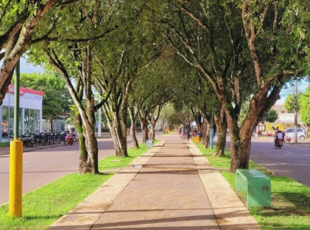
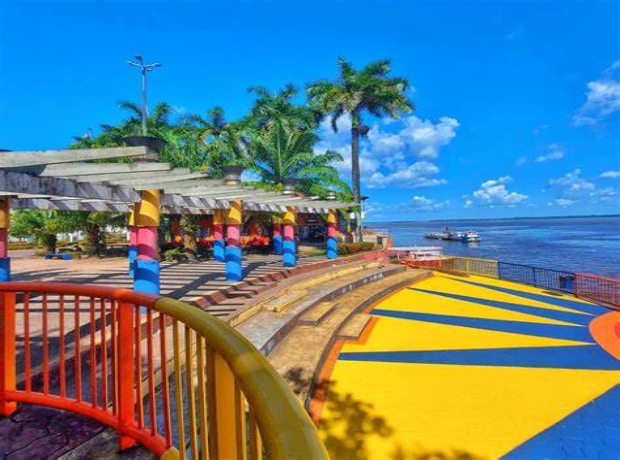
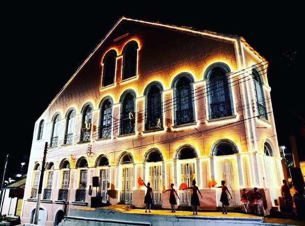
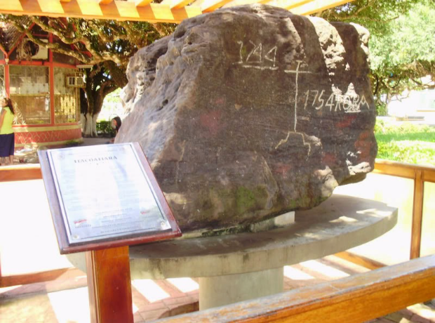
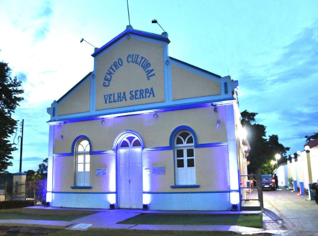

Lugare pra se visitar
Tunel Verde

Informações
A Avenida Torquato Tapajós ou Avenida Parque é um dos cartões postais da cidade de Itacoatiara. Também conhecida como “Túnel Verde”foi iniciada em 1928 e é inspirada na famosa Champs Elysées, que fica em Paris.
O local possui mais de 1 km de extensão e é arborizada com mais de 340 pés de oitizeiros, formando um grandioso túnel verde. Uma bela opção para caminhadas ou até mesmo ensaios fotográficos.
Praça do Relogio

Praça do Mirante

Cassarão Oscar Ramos

Cassarão Oscar Ramos

Pedra Pintada

Centro Cultural
